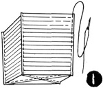
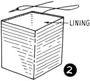
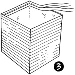
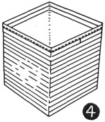
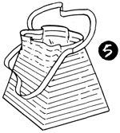
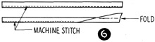

1952—How to Make Hats
by Ruby Carnahan
Ribbon Bag to Match Hat
CUTTING AND SEWING
Cut four sections of crinoline. Baste ribbon to each piece of crinoline, lapping each row slightly. Trim ribbon to fit crinoline. Stitch each row of ribbon flat on crinoline. (Illus. 1) Baste four sections together, then stitch, making a 1/4" seam. Press seams open.
LINING
Follow same pattern for lining. Stitch four sections together. Slip lining over bag and turn bag right side out. (Illus. 2) Baste lining to ribbon around top of bag.
FINISHING TOP OF BAG
(Illus. 3) Baste two rows of ribbon around top inside of bag. Baste first row on inside over lining edge, then baste another row around the top of that row.
(Illus. 4) Add two rows of ribbon on outside of bag around top. Starting in center of one section, turn end of ribbon under and baste one row to center of opposite section. Cut ribbon off and turn under. Take another length of ribbon, turn end under and starting where first ribbon left off baste second ribbon to opposite section. Cut ribbon off and turn under. Baste another row of ribbon around top of one piece. Stitch each row of ribbon flat.
DRAW STRINGS
(Illus. 5) Fold two 30" lengths of ribbon in half and stitch flat. Draw one piece through opening in ribbon, around bag and out through same opening.
(Illus. 6) Draw the other piece of ribbon through opposite opening, around bag and out through same opening. Finish ends of ribbon strips and join strips together.